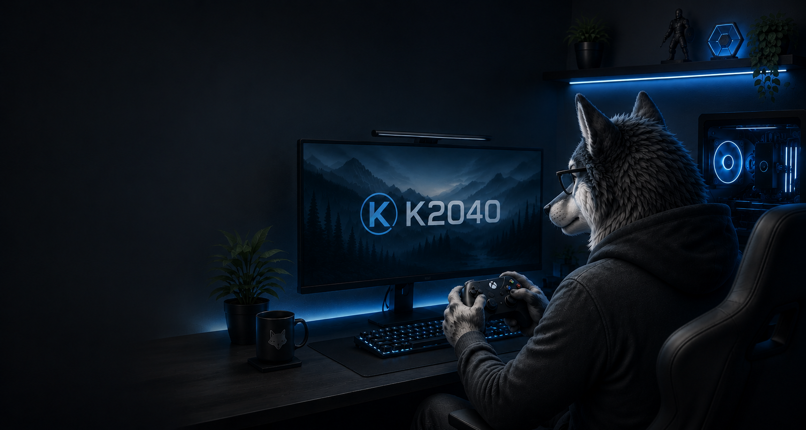

Gaming Mods
Open Source game mods, tools, and enhancements.
Featured project
ECO Quick Menu Additions
AiO and individual compatibility patches for Fallout 4 quick-menu setups.
Fallout 4
One place for the AiO installer and individual optional patches, with separate official links and changelogs.
Released
Mod Projects
Choose a project to see its overview, downloads, changelog, and screenshots.
Latest
Mod Updates
New releases and important project updates.
K2040 Projects
About
Open Source game mods and tools with official download links and project-specific documentation.